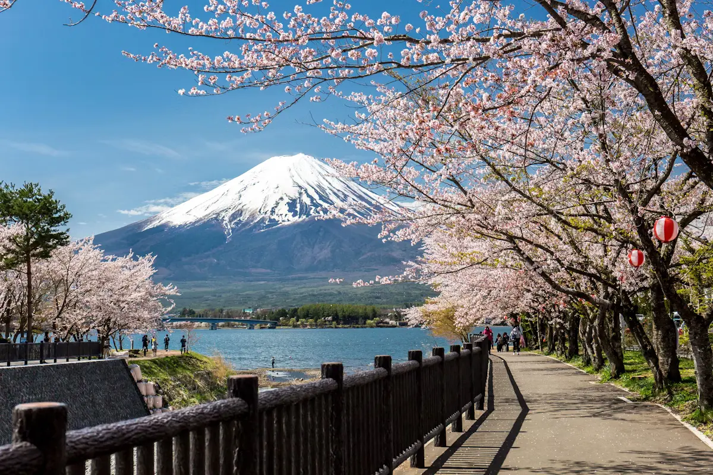
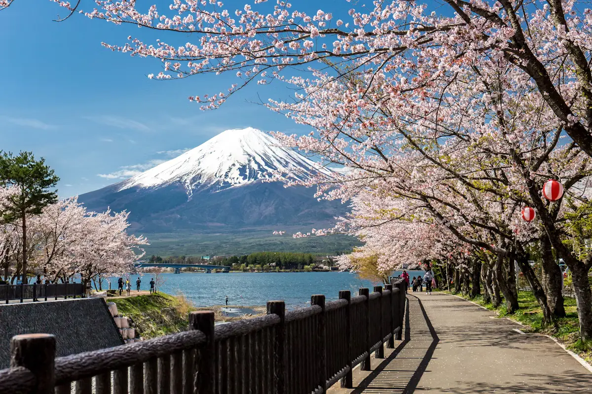

Paris
Mount Fuji is an active stratovolcano located on the Japanese island of Honshu, with a summit elevation of 3,776.24 m. It is the tallest mountain in Japan, the second-highest volcano located on an island in Asia (after Mount Kerinci on the Indonesian island of Sumatra), and seventh-highest peak of an island on Earth. Mount Fuji last erupted from 1707 to 1708. The mountain is located about 100 km southwest of Tokyo and is visible from the Japanese capital on clear days. Mount Fuji's exceptionally symmetrical cone, which is covered in snow for about five months of the year, is commonly used as a cultural icon of Japan and is frequently depicted in art and photography, as well as visited by sightseers, hikers and mountain climbers.
Activities:
- Iwamotoyama Park
- Mount Fuji Children's World
- Sacred & Religious Sites